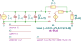

"transimpedance"
.source I1
.lgRef E1
.detector V_2
.param C_s=5p R_f=100k R_ell=2k
C1 1 0 C value={C_s} vinit=0
C2 1 0 C value={C_d} vinit=0
C3 1 0 C value={C_c/2} vinit=0
E1 2 0 1 0 EZ value={-A_0/(1+s*A_0/2/pi/G_B)} zo={R_o}
I1 0 1 I value={I_s} noise=0 dc=0 dcvar=0
R1 1 2 R value={R_f} noisetemp=0 noiseflow=0 dcvar=0 dcvarlot=0
R2 2 0 R value={R_ell} noisetemp=0 noiseflow=0 dcvar=0 dcvarlot=0
.end
| RefDes | Nodes | Refs | Model | Param | Symbolic | Numeric |
|---|---|---|---|---|---|---|
| C1 | 1 0 | C | value | $C_{s}$ | $5.0 \cdot 10^{-12}$ | |
| vinit | $0$ | $0$ | ||||
| C2 | 1 0 | C | value | $C_{d}$ | $C_{d}$ | |
| vinit | $0$ | $0$ | ||||
| C3 | 1 0 | C | value | $0.5 C_{c}$ | $0.5 C_{c}$ | |
| vinit | $0$ | $0$ | ||||
| E1 | 2 0 1 0 | EZ | value | $- \frac{A_{0}}{\frac{0.5 A_{0} s}{\pi G_{B}} + 1}$ | $- \frac{A_{0}}{\frac{0.1592 A_{0} s}{G_{B}} + 1.0}$ | |
| zo | $R_{o}$ | $R_{o}$ | ||||
| I1 | 0 1 | I | value | $I_{s}$ | $I_{s}$ | |
| noise | $0$ | $0$ | ||||
| dc | $0$ | $0$ | ||||
| dcvar | $0$ | $0$ | ||||
| R1 | 1 2 | R | value | $R_{f}$ | $1.0 \cdot 10^{5}$ | |
| noisetemp | $0$ | $0$ | ||||
| noiseflow | $0$ | $0$ | ||||
| dcvar | $0$ | $0$ | ||||
| dcvarlot | $0$ | $0$ | ||||
| R2 | 2 0 | R | value | $R_{\ell}$ | $2000.0$ | |
| noisetemp | $0$ | $0$ | ||||
| noiseflow | $0$ | $0$ | ||||
| dcvar | $0$ | $0$ | ||||
| dcvarlot | $0$ | $0$ |
| Name | Symbolic | Numeric |
|---|---|---|
| $C_{s}$ | $5.0 \cdot 10^{-12}$ | $5.0 \cdot 10^{-12}$ |
| $R_{\ell}$ | $2000$ | $2000.0$ |
| $R_{f}$ | $1.0 \cdot 10^{5}$ | $1.0 \cdot 10^{5}$ |
| Name |
|---|
| $G_{B}$ |
| $C_{c}$ |
| $A_{0}$ |
| $R_{o}$ |
| $C_{d}$ |
| $I_{s}$ |
Go to transimpedance_index
SLiCAP: Symbolic Linear Circuit Analysis Program, Version 2.0.1 © 2009-2024 SLiCAP development team
For documentation, examples, support, updates and courses please visit: analog-electronics.tudelft.nl
Last project update: 2024-10-20 16:53:53